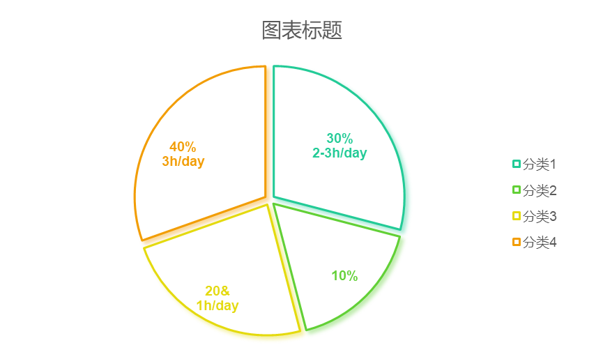
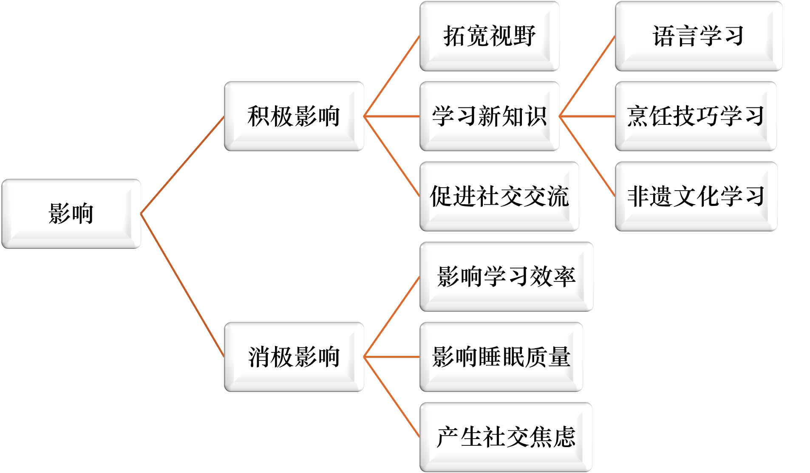
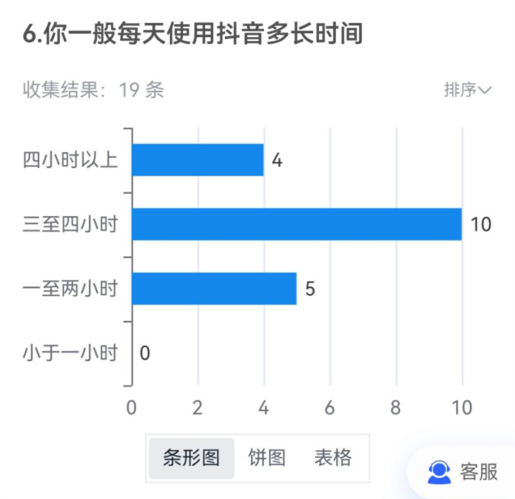
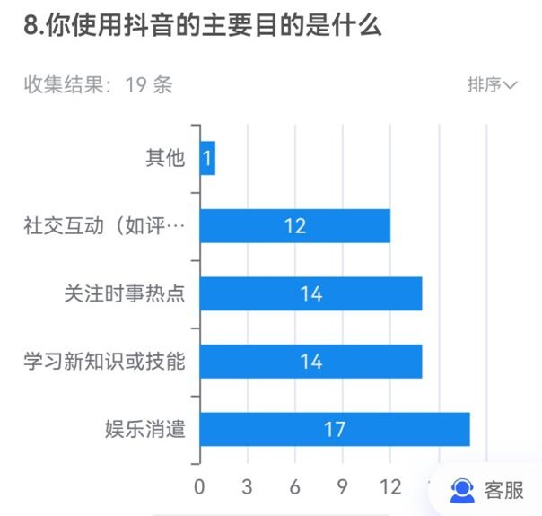
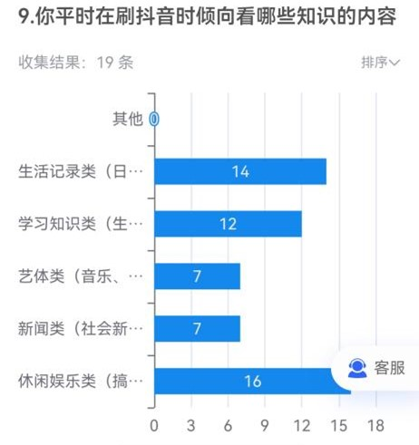
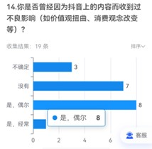
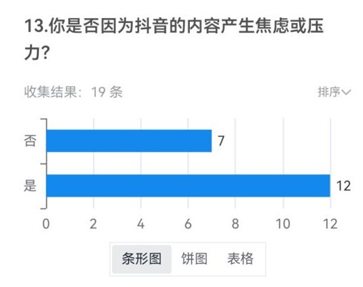
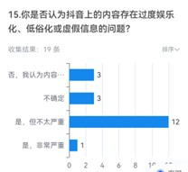

随着移动互联网的迅猛发展，抖音作为一款短视频平台，已深入当代大学生的日常生活。它在丰富校园文化、拓宽信息获取渠道的同时，也可能对大学生的价值观、学习习惯和心理健康产生一定影响。本次调查旨在探讨抖音对当代大学生的影响，分析其在学习、生活、人际交往等方面的作用，为此我们设计了访谈和问卷，现在让我们一起深入了解这一现象，共同关注抖音时代下大学生的成长与发展。
为了达到调查目的，我们选了几位大学生进行简单采访。
从访谈中了解到，当代大学生普遍经常使用抖音，且主要在休闲时间使用。这表明抖音已成为他们休闲娱乐的重要工具之一。

| 问题 | 回答 |
|---|---|
| 是否使用抖音？ | 经常使用；并且在休闲的时候使用 |
| 抖音的积极影响？ | 拓宽视野、学习新知识、促进社交交流 |
| 抖音的消极影响？ | 影响学习效率、影响睡眠质量、产生社交焦虑 |
| 建议？ | 劳逸结合的使用 |

经过一段时间的收集与整理，我们的调查问卷已顺利完成。本次调查的结果分析将为我们揭展示抖音这一流行社交媒体平台对大学生日常行为、学习效率、消费影响及社交方式等方面的影响程度。以下是基于问卷数据的初步分析，我们将通过这些分析结果，探讨抖音在大学生生活中的积极作用与潜在挑战，以期为大家提供一个更加全面的认识和思考。
参与度：19 份答卷，全部为大学生
使用频率：
内容偏好：大多数学生倾向于观看生活记录和休闲娱乐内容，这可能反映了大学生对轻松娱乐内容的偏好。
 影响评估：有学生认为抖音影响了社交生活和学习效率，但也有人表示抖音拓宽了视野，增加了娱乐选择。
消费行为：有部分学生因抖音广告或直播购买商品，显示抖音对消费行为有一定影响。
负面影响：有学生表示因抖音内容产生焦虑或压力，以及价值观扭曲。
 | 问题 | 分析 |
|---|---|
| 1. 价值观与消费习惯 | 抖音作为一个个性化内容推送平台，对大学生的价值观和消费习惯产生了影响。它不仅提供了一个展示和接触各种思想、文化的窗口，也使得学生的价值观更加多元和开放。同时，抖音上的直播和广告推荐可能导致大学生的冲动购买行为。 |
| 2. 社交方式与网络成瘾 | 抖音对大学生的社交方式也产生了影响，它提供了一个新的社交平台，但同时也带来了网络成瘾的问题。一些大学生可能会因为抖音上的内容而产生焦虑或压力，这可能与过度使用抖音有关。 |
| 3. 学习效率与时间管理 | 抖音的使用可能会影响大学生的学习效率和睡眠时间。有学生表示会使用工作、生活或休息时间去刷抖音，这可能会对他们的日常安排和学习产生负面影响 |
| 4. 思想政治教育的挑战 | 抖音等社交媒体平台的多元化信息对传统的思想政治教育方式构成了挑战。它们提供了一个展示和接触各种思想、文化的窗口，这在一定程度上促进了学生视野的拓展和思想的开放，但也可能带来错误信息和不良影响。 |
针对以上影响，建议大学生在使用抖音时要做到劳逸结合。他们应该合理安排自己的时间，确保在学习和休息之间找到平衡。同时，他们也应该注意保护自己的身体健康和心理健康，避免过度使用抖音导致的不良后果。此外，学校和家庭也应该加强对大学生的引导和监督，帮助他们正确使用抖音等短视频平台。
综上所述，抖音对当代大学生既有积极影响也有消极影响。关键在于他们如何正确使用这个平台，做到既享受其中的乐趣又保持身心健康和学业进步。